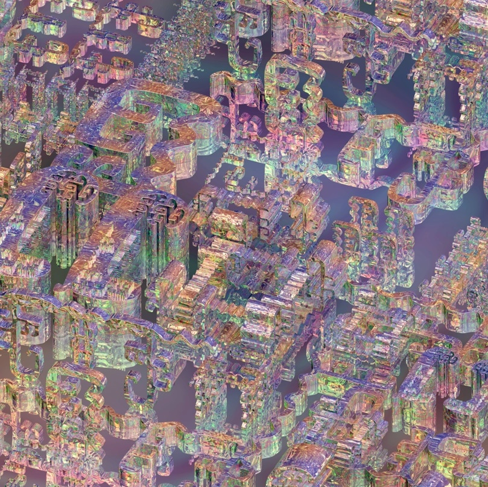
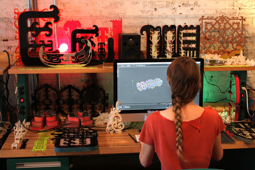
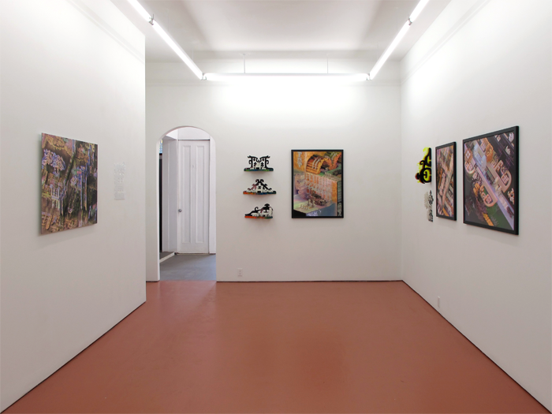
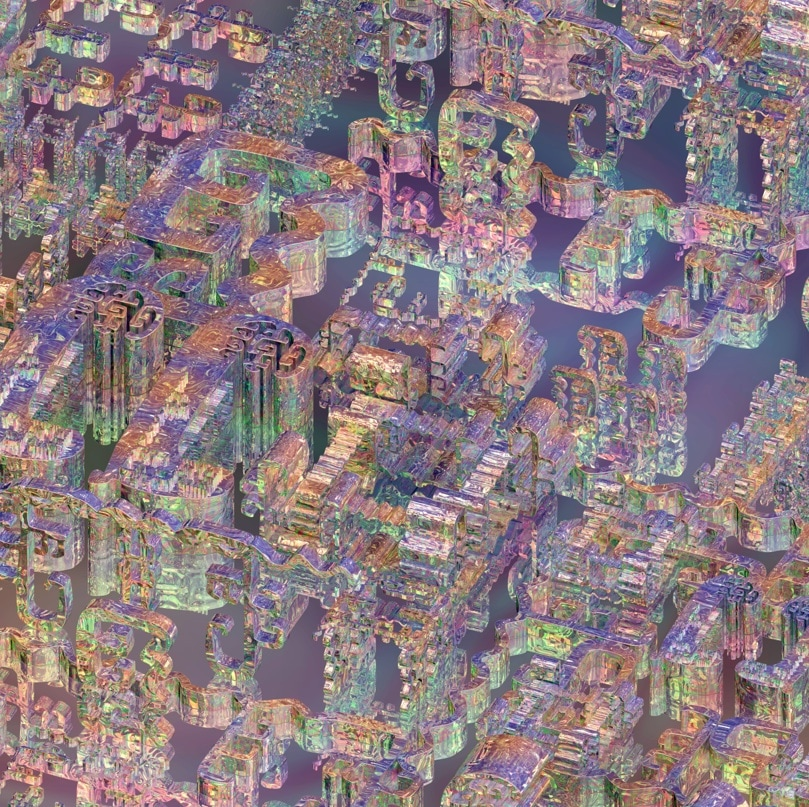
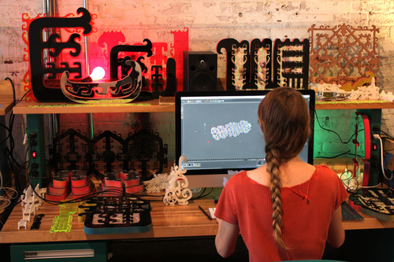
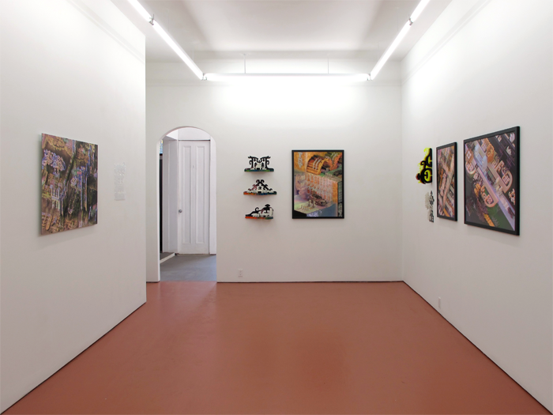
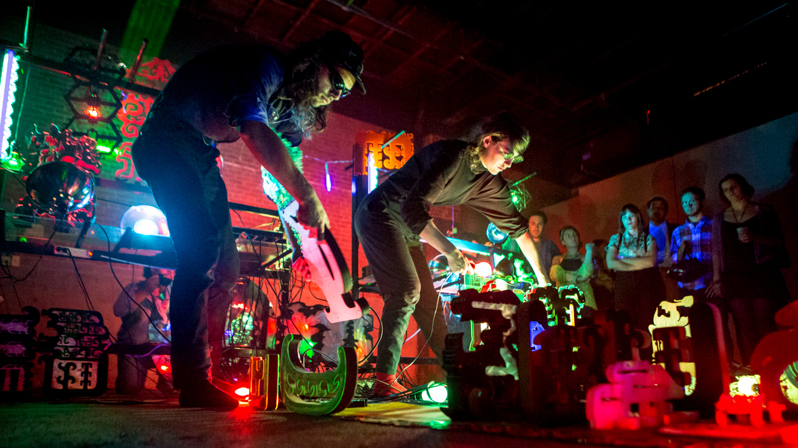
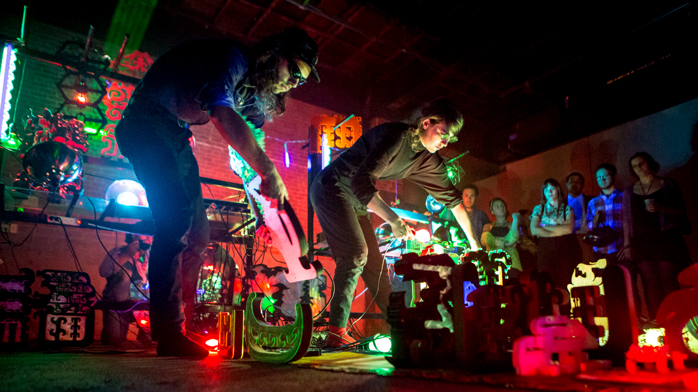

American Medium is a gallery in Bed Stuy, Brooklyn. It is run by Travis Fitzgerald, Josh Pavlacky, and Daniel Wallace...
American Medium is a gallery in Bed Stuy, Brooklyn. It is run by Travis Fitzgerald, Josh Pavlacky, and Daniel Wallace...
424 Gates Ave, Brooklyn...
American Medium is a gallery committed to exploring 21st century modes of cultural exchange.
They represent the artists Harm van den Dorpel, Ann Hirsch, Brian Khek, Kareem Lotfy, Jaakko Pallasvuo and Brenna Murphy...
 





 
